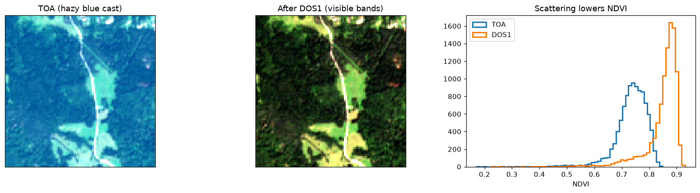
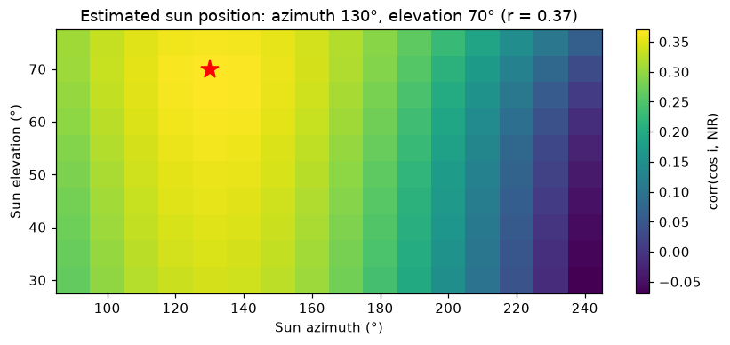
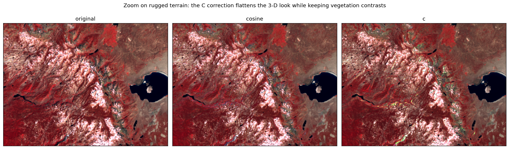
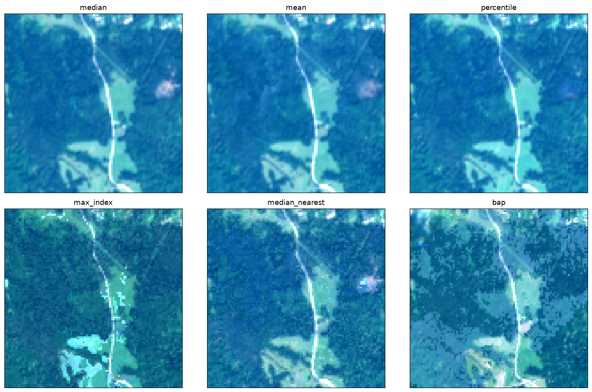
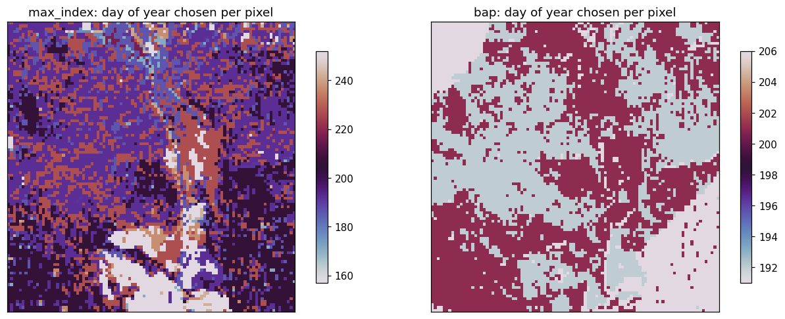
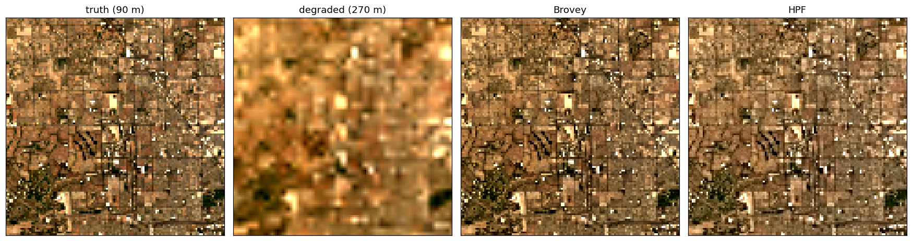
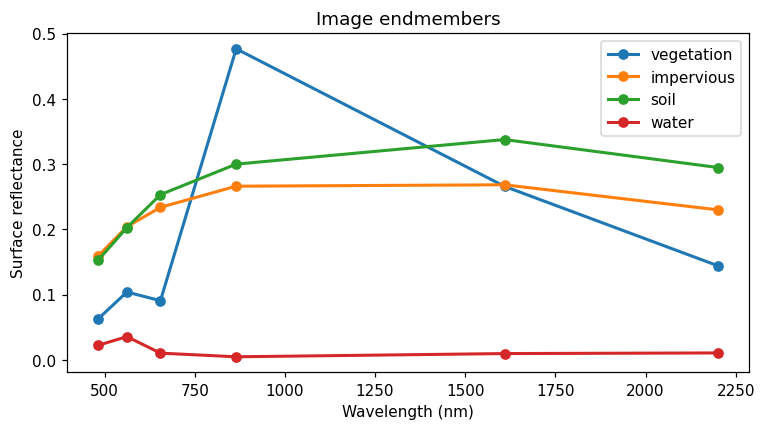
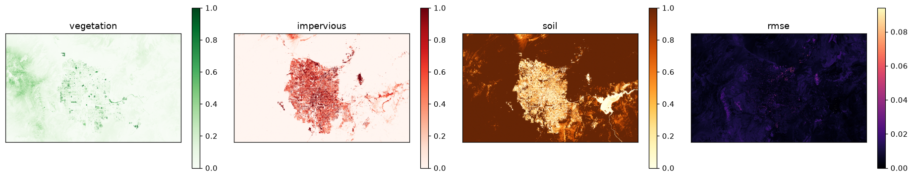
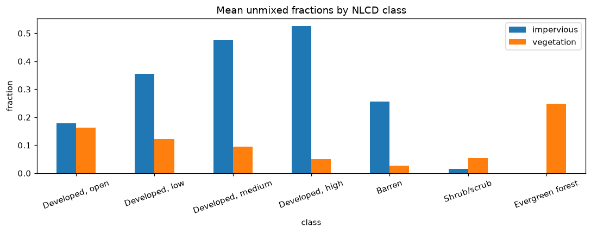

Analysis-ready data rarely arrive ready for your analysis.
Overview
Haze, terrain shading, clouds, mismatched resolutions and small geometric offsets all bias results. This module works through the main corrections with real data and, wherever possible, measures how well each one works.
Core concepts
Learning objectives
Follow the radiometric chain DN → radiance → TOA → surface reflectance, and apply DOS1.
Estimate sun geometry from an image and correct terrain illumination (cosine, C, Minnaert, SCS+C).
Compare cloud-free compositing methods on a real Sentinel-2 series.
Pan-sharpen and evaluate the result with Wald’s protocol and ERGAS.
Detect and correct sub-pixel misregistration.
Estimate sub-pixel land-cover fractions with linear spectral unmixing, and validate them.
Data
Data
Use
Sentinel-2 L1C time series, Slovenia (eo-learn, 68 dates)
DOS1, compositing, co-registration
Landsat 7 5-year composite + 90 m DEM, central Sierra Nevada
Installation. This notebook needs installation option 5 (core, spatial analysis, spatial statistics, geostatistics and remote sensing): pip install "geolattice[remote-sensing]". See “Installation options” in the GeoLattice README.
Code
import warnings # warning controlwarnings.filterwarnings("ignore", category=UserWarning) # hide routine library warningswarnings.filterwarnings("ignore", category=RuntimeWarning) # e.g. "mean of empty slice" in all-NaN areasimport json # read JSON metadataimport numpy as np # arraysimport pandas as pd # tablesimport xarray as xr # labelled rastersimport geopandas as gpd # vector dataimport rasterio # raster readingimport matplotlib.pyplot as plt # figuresfrom rasterio.enums import Resampling # resampling methodsimport geolattice.rsense as rs # GeoLattice remote sensing toolsrasterio.Env(CPL_LOG="/dev/null").__enter__() # silence GDAL log messages for the whole sessionplt.rcParams.update({"figure.dpi": 110}) # figure resolution
Code
from pathlib import Path # file pathsimport urllib.request # download files over HTTP# The notebook's data folder: ../../../../Data/08_remote_sensing/08_02_optical/ next to this notebook, found from here or from the repository root.DATA =next((p for p in (Path("Data/08_remote_sensing/08_02_optical"), Path("../../../../Data/08_remote_sensing/08_02_optical"))if p.is_dir()), Path("../../../../Data/08_remote_sensing/08_02_optical"))DATA.mkdir(exist_ok=True) # create it if neededGH ="https://github.com/opengeos/datasets/releases/download"# base URL of the opengeos datasets releaseRAW ="https://raw.githubusercontent.com"# base URL for raw GitHub files# the eo-learn test patch (Sentinel-2 time series)EOP =f"{RAW}/sentinel-hub/eo-learn/develop/example_data/TestEOPatch"URLS = { # file name -> download URL# Landsat 9 C2 L2 surface reflectance, 8 July 2024, Las Vegas (90 m, 7 bands)"landsat_las_vegas.tif": f"{GH}/raster/landsat_las_vegas.tif",# Landsat annual composites over Pucallpa, Peru (SWIR1, NIR, Red, Green; 8-bit)**{f"pucallpa_{y}.tif": f"{RAW}/opengeos/data/main/landsat/{y}.tif"for y inrange(1985, 2021, 5)},# ECOSTRESS L2T land surface temperature (70 m), southern California, 1 April 2023"ecostress_lst.tif": f"{GH}/raster/ECOv002_L2T_LSTE_26860_001_10SGD_20230401T203733_0710_01_LST.tif",# Landsat 7 composite + 90 m DEM, central Sierra Nevada (same grid family as Part I)"landsat.tif": f"{GH}/raster/landsat.tif","dem_90m.tif": f"{GH}/book/dem_90m.tif","cog.tif": f"{GH}/raster/cog.tif",# Real Sentinel-2 L1C time series (eo-learn TestEOPatch, Slovenia, 68 dates, 13 bands)"s2_bands.npy": f"{EOP}/data/BANDS-S2-L1C.npy","s2_clp.npy": f"{EOP}/data/CLP.npy","s2_clm.npy": f"{EOP}/mask/CLM.npy","s2_lulc.npy": f"{EOP}/mask_timeless/LULC.npy","s2_dem.npy": f"{EOP}/data_timeless/DEM.npy","s2_timestamps.json": f"{EOP}/timestamps.json","s2_bbox.geojson": f"{EOP}/bbox.geojson",}def fetch(name): # download helper"""Download a tutorial dataset once and return its local path.""" path = DATA / name # local pathifnot path.exists(): # download only if missingprint(f"Downloading {name} ...") # progress message urllib.request.urlretrieve(URLS[name], path) # copy the URL to the local pathreturn path # the local pathNLCD_URL =f"{GH}/raster/nlcd_2021_land_cover_90m.tif"# NLCD 2021 land cover (90 m), read remotelyNLCD_CLASSES = {11: ("Open water", "#466b9f"), 21: ("Developed, open", "#dec5c5"),22: ("Developed, low", "#d99282"), 23: ("Developed, medium", "#eb0000"),24: ("Developed, high", "#ab0000"), 31: ("Barren", "#b3ac9f"),41: ("Deciduous forest", "#68ab5f"), 42: ("Evergreen forest", "#1c5f2c"),43: ("Mixed forest", "#b5c58f"), 52: ("Shrub/scrub", "#ccb879"),71: ("Grassland", "#dfdfc2"), 81: ("Pasture/hay", "#dcd939"),82: ("Cultivated crops", "#ab6c28"), 90: ("Woody wetlands", "#b8d9eb"),95: ("Herbaceous wetlands", "#6c9fb8")}def nlcd_for(template, name="nlcd_window"): # NLCD land cover on the grid of another raster"""NLCD 2021 land cover on the grid of `template`. Reads only the needed window of the 200 MB CONUS COG over HTTP (cloud-native), then nearest-neighbour resamples it onto the template grid. Cached in ../../../../Data/08_remote_sensing/08_02_optical/. """from rasterio.enums import Resampling # nearest-neighbour resampling for classes cache = DATA /f"{name}.tif"# cached local windowifnot cache.exists(): # only read the remote file onceimport rasterio, rioxarray # raster readersfrom rasterio.warp import transform_bounds # reproject a bounding boxwith rasterio.Env(GDAL_DISABLE_READDIR_ON_OPEN="EMPTY_DIR"): # do not list the remote folder (faster) src = rioxarray.open_rasterio("/vsicurl/"+ NLCD_URL) # open the remote GeoTIFF lazily# bounds of the template in the NLCD CRS b = transform_bounds(template.rio.crs, src.rio.crs, *template.rio.bounds()) win = src.rio.clip_box(*b).squeeze("band", drop=True).load() # read only that window rs.write(win, cache, cog=False) # cache it# read the cached window; 0 = no data win = rs.read(cache, masked=False).squeeze("band", drop=True).rio.write_nodata(0)# resample onto the template grid (nearest) out = win.rio.reproject_match(template, resampling=Resampling.nearest, nodata=0)return out.astype("int16").rio.write_nodata(0) # as 16-bit integers with 0 as no-data
Code
# Real Sentinel-2 L1C cube (same construction as Module 7)b = np.load(fetch("s2_bands.npy")); clp = np.load(fetch("s2_clp.npy"))[..., 0]times = pd.to_datetime(json.load(open(fetch("s2_timestamps.json")))) # acquisition dates of the time seriesbb = json.load(open(fetch("s2_bbox.geojson")))["coordinates"][0] # the patch's bounding polygon# the 13 Sentinel-2 band namesnames = ["B01", "B02", "B03", "B04", "B05", "B06", "B07", "B08", "B8A", "B09", "B10", "B11", "B12"]x =min(p[0] for p in bb) +10* (np.arange(b.shape[2]) +0.5) # x coordinates of pixel centres (10 m pixels)y =max(p[1] for p in bb) -10* (np.arange(b.shape[1]) +0.5) # y coordinates of pixel centres# bands as variables of a Dataset (time, y, x)s2 = xr.Dataset({n: (("time", "y", "x"), b[..., i]) for i, n inenumerate(names)}, coords={"time": times, "y": y, "x": x}).rio.write_crs(32633)s2.attrs["pyrsense:sensor"] ="sentinel2"# record the sensorfrom scipy.ndimage import binary_dilation # grow masks by a few pixels# clear = cloud probability below 0.4, cloud edges includedclear = xr.DataArray(~np.stack([binary_dilation(p >0.4, iterations=2) for p in clp]), dims=("time", "y", "x"), coords=s2[["B02"]].coords)s2c = s2.where(clear) # cloudy pixels -> NaNprint(s2.sizes) # dimensions
DN → radiance: L = M·DN + A (gain/offset from metadata): rs.optical.radiance
Radiance → TOA reflectance: divide by solar irradiance and sun angle: rs.optical.toa_reflectance
TOA → surface reflectance: remove atmospheric scattering and absorption with a radiative transfer model (6S, LaSRC for Landsat, Sen2Cor for Sentinel-2).
Agencies now distribute surface reflectance, so step 3 is usually done for you. When it isn’t (historical archives, commercial imagery), Dark Object Subtraction (DOS1) is a robust first-order correction: the darkest pixels in each band should be nearly black, so any excess brightness is atmospheric path radiance.
Code
# the least cloudy July or August datek =int(np.argmin(np.where(times.month.isin([7, 8]), clp.mean((1, 2)), 9)))toa = s2.isel(time=k)[["B02", "B03", "B04", "B08"]] # top-of-atmosphere blue, green, red and NIR of that datedos = rs.optical.dos1(toa, percentile=0.5) # dark-object subtraction (DOS1) using the 0.5th percentile# darkest values before and aftertab = pd.DataFrame({"TOA dark (0.5th pct)": [float(np.nanpercentile(toa[v], 0.5)) for v in toa.data_vars],"after DOS1": [float(np.nanpercentile(dos[v], 0.5)) for v in toa.data_vars]}, index=["blue", "green", "red", "NIR"]).round(4)tab["path radiance removed"] = (tab.iloc[:, 0] - tab.iloc[:, 1]).round(4) # the path radiance that was removedtab # show the table
TOA dark (0.5th pct)
after DOS1
path radiance removed
blue
0.0650
0.01
0.0550
green
0.0483
0.01
0.0383
red
0.0268
0.01
0.0168
NIR
0.1418
0.01
0.1318
Look at the NIR row: DOS1 removed 0.13 of “path radiance” from NIR, far more than from blue. That is physically impossible (scattering falls with wavelength). The method assumes every band contains a truly dark object; in this 1 km² of forest and meadow there is no water or deep shadow, so the darkest NIR pixels are still vegetation. The fix is to apply DOS only to bands where dark objects exist (here the visible bands) and leave NIR unchanged.
Code
# DOS1 on the visible bands only, NIR unchangeddos = rs.optical.dos1(toa[["B02", "B03", "B04"]], percentile=0.5).merge(toa[["B08"]])ndvi_toa = rs.optical.index(toa, "NDVI") # NDVI from TOA reflectancendvi_dos = rs.optical.index(dos, "NDVI") # NDVI after DOS1fig, axes = plt.subplots(1, 3, figsize=(15, 4)) # three panels# TOA true colourrs.viz.plot_rgb(toa, ["B04", "B03", "B02"], ax=axes[0], per_band=False, title="TOA (hazy blue cast)")# after DOS1rs.viz.plot_rgb(dos, ["B04", "B03", "B02"], ax=axes[1], per_band=False, title="After DOS1 (visible bands)")axes[2].hist(ndvi_toa.values.ravel(), 60, histtype="step", label="TOA", lw=2) # NDVI histogram, TOAaxes[2].hist(ndvi_dos.values.ravel(), 60, histtype="step", label="DOS1", lw=2) # NDVI histogram, DOS1axes[2].set(xlabel="NDVI", title="Scattering lowers NDVI"); axes[2].legend() # labels, title and legendfor a in axes[:2]: a.set_xticks([]); a.set_yticks([]) # no ticks on the imagesplt.tight_layout(); plt.show() # arrange and draw# mean NDVI before and afterprint(f"Mean NDVI: TOA {float(ndvi_toa.mean()):.3f} → DOS1 {float(ndvi_dos.mean()):.3f}")

Mean NDVI: TOA 0.734 → DOS1 0.849
Scattering is strongest at short wavelengths (blue > green > red), so DOS1 removes most from blue. Because path radiance inflates red while NIR is almost unaffected, TOA NDVI is biased low and the correction raises it. Always compare indices across dates on surface reflectance, not TOA, and sanity-check any image-based correction against physics.
Topographic correction
On slopes facing the sun, pixels receive more light than on slopes facing away, so the same forest looks brighter or darker depending on aspect. The local illumination is
\[\cos i = \cos\theta_z \cos s + \sin\theta_z \sin s \cos(\phi_a - a)\]
(θz sun zenith, φa sun azimuth, s slope, a aspect). We use the Sierra Nevada Landsat composite and a 90 m DEM, both reprojected to UTM so slopes are computed in true metres (Web Mercator would stretch distances by ~26 % at this latitude and flatten the slopes).
Code
# the Landsat 7 image with band namesimg = rs.read(fetch("landsat.tif"), band_names=["blue", "green", "red", "nir"])# zero = no data; reproject to UTM 11N at 180 mimg = img.where(img >0).rio.reproject("EPSG:32611", resolution=180, resampling=Resampling.bilinear)img = img.where(img >0) /255.0# DN (0-255) -> 0-1dem = rs.read(fetch("dem_90m.tif")).squeeze("band", drop=True).astype("float32") # the DEM as floats# average the DEM onto the image griddem = dem.rio.reproject_match(img.isel(band=0), resampling=Resampling.average)dem = dem.where(dem >-100) # mask invalid elevationsds = img.to_dataset(dim="band").rio.write_crs("EPSG:32611") # bands as variables, with the CRSfig, axes = plt.subplots(1, 2, figsize=(14, 5)) # two panelsrs.viz.plot_rgb(ds, "false_color", ax=axes[0], title="Landsat 7 colour infrared") # colour infrared# hillshaders.viz.plot_raster(rs.lidar.hillshade(dem), ax=axes[1], cmap="gray", title="Hillshade of the DEM", colorbar=False)plt.tight_layout(); plt.show() # arrange and draw
This is a five-year composite, so there is no single sun position in the metadata. We can estimate it from the image: for a given azimuth and elevation, compute cos i and find the geometry that best explains the brightness pattern of vegetated pixels.
Code
ndvi = ds.rs.index("NDVI") # NDVIveg = (ndvi >0.3) & dem.notnull() # vegetated pixels with elevationnir = ds["nir"].values # NIR as an arraybest = (-1, None) # best (correlation, (azimuth, elevation)) so fargrid = [] # every tested sun positionfor az inrange(90, 241, 10): # sun azimuths 90-240 degreesfor el inrange(30, 76, 5): # sun elevations 30-75 degrees# cosine of the solar incidence angle for this sun position ci = rs.lidar.illumination(dem, az, el).values m = veg.values & np.isfinite(ci) & np.isfinite(nir) # vegetated, valid pixels r = np.corrcoef(ci[m], nir[m])[0, 1] # correlation between illumination and NIR grid.append((az, el, r)) # store itif r > best[0]: # strongest correlation so far best = (r, (az, el)) # keep this sun positionr_best, (SUN_AZ, SUN_EL) = best # the best sun position# correlations as an elevation x azimuth tableg = pd.DataFrame(grid, columns=["az", "el", "r"]).pivot(index="el", columns="az", values="r")fig, ax = plt.subplots(figsize=(9, 3.5)) # one panelim = ax.imshow(g, origin="lower", aspect="auto", cmap="viridis", # the correlation surface extent=[g.columns.min() -5, g.columns.max() +5, g.index.min() -2.5, g.index.max() +2.5])# the best position and a colour barax.plot(SUN_AZ, SUN_EL, "r*", ms=14); plt.colorbar(im, label="corr(cos i, NIR)")ax.set(xlabel="Sun azimuth (°)", ylabel="Sun elevation (°)", # labels and title title=f"Estimated sun position: azimuth {SUN_AZ}°, elevation {SUN_EL}° (r = {r_best:.2f})")plt.show() # draw

The estimate (a south-east, fairly high sun) is consistent with mid-morning summer acquisitions of Landsat at 37-38° N. Now we apply the four correction methods and measure how much illumination dependence remains, using vegetated pixels only to fit the empirical coefficients.
Code
cos_i = rs.lidar.illumination(dem, SUN_AZ, SUN_EL) # solar illumination with the estimated sun positionresults = {"original": ds} # uncorrected imagefor method in ["cosine", "c", "minnaert", "scs+c"]: # four topographic correction methods# correct the image, fitting on vegetation only results[method] = rs.optical.topographic_correction(ds, dem, SUN_AZ, SUN_EL, method=method, mask=veg)ci = cos_i.values # illumination as an arraym = veg.values & np.isfinite(ci) # vegetated, valid pixelsaspect = rs.lidar.aspect(dem).values # aspect in degreesnorth = m & ((aspect >315) | (aspect <45)) & (rs.lidar.slope(dem).values >15) # steep north-facing slopessouth = m & (aspect >135) & (aspect <225) & (rs.lidar.slope(dem).values >15) # steep south-facing slopesrows = {} # statistics per methodfor name, r in results.items(): # every method v = r["nir"].values # its NIR band ok = m & np.isfinite(v) # valid pixels# illumination correlation and north/south contrast rows[name] = {"corr(cos i, NIR)": np.corrcoef(ci[ok], v[ok])[0, 1],"NIR south/north slope ratio": np.nanmean(v[south]) / np.nanmean(v[north]),"NIR CV (vegetated)": np.nanstd(v[ok]) / np.nanmean(v[ok])}pd.DataFrame(rows).T.round(3) # show the table
corr(cos i, NIR)
NIR south/north slope ratio
NIR CV (vegetated)
original
0.371
1.319
0.246
cosine
0.109
1.101
0.227
c
-0.026
1.023
0.226
minnaert
0.018
1.046
0.225
scs+c
0.116
1.028
0.229
A good correction drives the correlation with cos i towards zero and the south/north ratio towards 1 without inflating variability. All four methods help. The empirical C and Minnaert corrections remove the illumination effect almost completely; the cosine method and SCS+C leave part of it. The cosine method has no fitted coefficient: it assumes surfaces reflect equally in all directions and ignores diffuse skylight, which is why it is known to over-correct poorly lit slopes. Which empirical method wins varies by scene and land cover, so measure it as done here rather than assuming.
Code
fig, axes = plt.subplots(1, 3, figsize=(16, 5)) # three panels# a zoom window on rugged terrain (UTM metres)win =dict(x=slice(250_000, 330_000), y=slice(4_240_000, 4_180_000))for ax, name inzip(axes, ["original", "cosine", "c"]): # original, cosine and C correction# colour infrared of the zoom rs.viz.plot_rgb(results[name].sel(win), "false_color", ax=ax, per_band=False, title=name) ax.set_xticks([]); ax.set_yticks([]) # no ticks# overall titleplt.suptitle("Zoom on rugged terrain: the C correction flattens the 3-D look while keeping vegetation contrasts")plt.tight_layout(); plt.show() # arrange and draw

Cloud-free compositing
Composites merge several cloud-masked dates into one image. Methods trade cleanliness against spectral consistency (whether all bands of a pixel come from the same date). We composite the 2016-2017 summer (June-September) Sentinel-2 dates with each method in rs.optical.composite.
Code
season = s2c.sel(time=s2c.time.dt.month.isin([6, 7, 8, 9])) # cloud-masked summer datesseason = season[["B02", "B03", "B04", "B05", "B08", "B11", "B12"]] # bands used for compositingprint(f"{season.sizes['time']} summer dates, mean clear fraction "# number of dates and mean clear sharef"{float(clear.sel(time=season.time).mean()):.0%}")# compositing methods and their optionsmethods = {"median": {}, "mean": {}, "percentile": {"q": 25}, "max_index": {"index": "NDVI"},"median_nearest": {}, "bap": {"target_doy": 200}}comps = {m: rs.optical.composite(season, m, **kw) for m, kw in methods.items()} # build every composite
32 summer dates, mean clear fraction 60%
Code
fig, axes = plt.subplots(2, 3, figsize=(14, 9)) # 2 x 3 panelsfor ax, (m, c) inzip(axes.ravel(), comps.items()): # every composite# true colour with a 1-99 % stretch rs.viz.plot_rgb(c, ["B04", "B03", "B02"], ax=ax, per_band=False, p=(1, 99), title=m) ax.set_xticks([]); ax.set_yticks([]) # no ticksplt.tight_layout(); plt.show() # arrange and draw

To compare quantitatively we use three checks: residual haze/cloud (share of pixels with TOA blue reflectance > 0.12, well above clear vegetation even with haze in this scene), gaps (pixels with no value), and spectral realism: the distance of each composite pixel’s spectrum to the nearest real clear observation of that pixel. Per-band statistics (median, mean, percentile) mix dates, so their spectra need not match any real observation; selection methods keep real spectra.
Code
obs = np.stack([season[v].values for v in season.data_vars], -1) # (t, y, x, b)rows = {} # statistics per methodfor m, c in comps.items(): # every composite comp = np.stack([c[v].values for v in season.data_vars], -1) # (y, x, b) d = np.sqrt(np.nansum((obs - comp[None]) **2, -1)) # spectral distance of each date to the composite d[np.all(np.isnan(obs), -1)] = np.nan # NaN where a pixel was never clear# residual haze and distance to the observations rows[m] = {"residual haze/cloud (blue > 0.12)": float(np.nanmean(c["B02"].values >0.12)),"gaps": float(np.isnan(c["B04"].values).mean()),"distance to nearest real spectrum": float(np.nanmean(np.nanmin(d, 0))),"mean NDVI": float(rs.optical.index(c, "NDVI").mean())}pd.DataFrame(rows).T.round(4) # show the table
residual haze/cloud (blue > 0.12)
gaps
distance to nearest real spectrum
mean NDVI
median
0.0025
0.0
0.0101
0.6894
mean
0.0022
0.0
0.0130
0.6726
percentile
0.0006
0.0
0.0100
0.6810
max_index
0.0027
0.0
0.0000
0.7567
median_nearest
0.0024
0.0
0.0000
0.6957
bap
0.0031
0.0
0.0000
0.7125
Code
fig, axes = plt.subplots(1, 2, figsize=(12, 4.5)) # two panelsfor ax, m inzip(axes, ["max_index", "bap"]): # the two methods that pick one date per pixel src = comps[m]["source_time"] # the chosen date of every pixel doy = xr.where(src.notnull(), src.dt.dayofyear, np.nan) # as day of year rs.viz.plot_raster(doy, ax=ax, cmap="twilight", title=f"{m}: day of year chosen per pixel") # map it ax.set_xticks([]); ax.set_yticks([]) # no ticksplt.tight_layout(); plt.show() # arrange and draw

Max-NDVI favours the greenest date (often mid-summer) and so biases vegetation upward, which is fine for vegetation mapping but not for soils or change detection. BAP balances date proximity, distance from clouds and greenness, choosing more consistent dates. Median-nearest is robust to residual cloud and keeps real spectra, making it a good general default.
Pan-sharpening and Wald’s protocol
Landsat 8/9 have a 15 m panchromatic band alongside 30 m multispectral bands. Pan-sharpening injects the pan detail into the colour bands. To evaluate it we use Wald’s protocol: degrade everything by the resolution ratio, sharpen the degraded data, and compare with the original, which serves as ground truth.
Our scene is at 90 m, so we simulate a 90 m pan band from the visible bands (OLI’s pan covers 500-680 nm), degrade the multispectral bands to 270 m, sharpen back to 90 m, and score against the true 90 m bands with RMSE, correlation and ERGAS (lower is better; < 3 is good).
Code
ls = rs.read(fetch("landsat_las_vegas.tif"), # a Landsat scene of Las Vegas band_names=["coastal", "blue", "green", "red", "nir", "swir16", "swir22"], as_dataset=True)# mask zero red, clip to small positive values and set the CRSls = ls.where(ls["red"] >0).clip(min=1e-4).rio.write_crs(32611)ls.attrs["pyrsense:sensor"] ="landsat"# record the sensorsub = ls.isel(x=slice(300, 750), y=slice(150, 600)) # 450 × 450 px, city centretruth = sub[["red", "green", "blue"]] # the reference (true) RGB at 90 m# synthetic panchromatic band: weighted sum of blue, green and redpan = (0.25* sub["blue"] +0.4* sub["green"] +0.35* sub["red"]).rio.write_crs(32611)ms_coarse = truth.coarsen(x=3, y=3, boundary="trim").mean() # multispectral degraded 3x (270 m)ms_coarse = ms_coarse.drop_vars("spatial_ref").rio.write_crs(32611) # drop the stale 90 m transform# resolutions of the two inputsprint("MS degraded to", ms_coarse.rio.resolution(), "| pan at", pan.rio.resolution())def ergas(fused, ref, ratio): # ERGAS: relative error across bands, scaled by the resolution ratio# relative RMSE of each band terms = [(np.sqrt(np.nanmean((fused[b].values - ref[b].values) **2)) / np.nanmean(ref[b].values)) **2for b in ref.data_vars]return100/ ratio * np.sqrt(np.mean(terms)) # ERGAS formula# baseline: bilinear upsampling without the pan bandout = {"bilinear (no pan)": xr.Dataset({b: ms_coarse[b].rio.reproject_match(pan, resampling=Resampling.bilinear)for b in truth.data_vars})}for method in ["brovey", "ihs", "hpf"]: # three pan-sharpening methods# fuse the coarse bands with the pan band out[method] = rs.optical.pansharpen(ms_coarse, pan, method=method)scores = {} # scores per methodfor name, f in out.items(): # every result f = f.assign_coords(x=truth.x, y=truth.y) # same coordinates as the reference scores[name] = {"ERGAS": ergas(f, truth, 3), # ERGAS and other scores"RMSE (red)": float(np.sqrt(np.nanmean((f["red"] - truth["red"]) **2))),"corr (red)": float(xr.corr(f["red"], truth["red"]))}pd.DataFrame(scores).T.round(4) # show the table
Downloading landsat_las_vegas.tif ...
MS degraded to (270.0, -270.0) | pan at (90.0, -90.0)
ERGAS
RMSE (red)
corr (red)
bilinear (no pan)
7.0761
0.0460
0.7814
brovey
1.4115
0.0089
0.9969
ihs
1.6350
0.0094
0.9947
hpf
2.2535
0.0124
0.9857
Code
zoom =dict(x=slice(100, 220), y=slice(100, 220)) # a zoom window (pixels)fig, axes = plt.subplots(1, 4, figsize=(16, 4.4)) # four panels# images and titlesshow = [("truth (90 m)", truth), ("degraded (270 m)", out["bilinear (no pan)"]), ("Brovey", out["brovey"]), ("HPF", out["hpf"])]for ax, (t, d) inzip(axes, show): # every panel# true colour of the zoom rs.viz.plot_rgb(d.assign_coords(x=truth.x, y=truth.y).isel(zoom), ["red", "green", "blue"], ax=ax, per_band=False, title=t) ax.set_xticks([]); ax.set_yticks([]) # no ticksplt.tight_layout(); plt.show() # arrange and draw

All three sharpening methods beat plain upsampling by a wide margin. Brovey and IHS score best here, partly because our simulated pan band is an exact weighted sum of the visible bands; a real pan band has a broader response, which usually costs Brovey colour fidelity. HPF injects detail more conservatively. Remember that Wald’s protocol assumes the quality ranking is scale-invariant, a reasonable but untestable assumption.
Co-registration
Images from different dates or sensors can be offset by a fraction of a pixel to a few pixels. Unnoticed, this creates false change along every edge. rs.optical.coregister estimates the translation by sub-pixel phase correlation and resamples the image to match.
First a controlled test: shift a real Sentinel-2 band by a known amount and recover it.
Code
from scipy.ndimage import shift as nd_shift # shift an image by a sub-pixel amountref = s2["B08"].isel(time=k) # the NIR band of the clear datetrue_shift = (1.6, -2.3) # rows, cols (pixels)# a copy shifted by a known amountmoved = ref.copy(data=nd_shift(ref.values, true_shift, order=3, mode="nearest"))# estimate the shift and correct it (1/50 pixel precision)fixed, info = rs.optical.coregister(moved, ref, upsample=50)inner = (slice(6, -6), slice(6, -6)) # interior pixels (edges are affected by the shift)# applied vs estimated shiftprint(f"Applied shift: {true_shift} px → estimated correction: ({info['dy']:.2f}, {info['dx']:.2f}) px")# mean difference to the reference before and afterprint(f"Mean |difference| to reference: before {np.nanmean(np.abs(moved.values - ref.values)[inner]):.4f}, "f"after {np.nanmean(np.abs(fixed.values - ref.values)[inner]):.4f}")
Applied shift: (1.6, -2.3) px → estimated correction: (-1.58, 2.26) px
Mean |difference| to reference: before 0.0390, after 0.0077
Code
# Real data: how well are clear Sentinel-2 dates aligned with each other?clear_dates = [i for i inrange(len(times)) if clp[i].mean() <0.05][:12]rows = [] # offsets of every clear datefor i in clear_dates[1:]: # every clear date except the reference# estimate its offset against the reference date _, inf = rs.optical.coregister(s2["B08"].isel(time=i), s2["B08"].isel(time=clear_dates[0]),apply=False, upsample=50)# offset in metres (10 m pixels) rows.append((times[i].date(), round(inf["dy"] *10, 2), round(inf["dx"] *10, 2)))off = pd.DataFrame(rows, columns=["date", "dy (m)", "dx (m)"]) # as a tableprint(f"Reference date {times[clear_dates[0]].date()}; median |offset| = "# reference date and median offsetf"{np.median(np.hypot(off['dy (m)'], off['dx (m)'])):.1f} m")off # show the table
Reference date 2015-07-11; median |offset| = 8.2 m
date
dy (m)
dx (m)
0
2015-08-30
4.2
-0.2
1
2015-09-09
9.0
3.6
2
2016-01-07
18.2
6.8
3
2016-05-26
5.2
1.6
4
2016-08-04
3.8
2.6
5
2016-08-14
5.4
1.0
6
2016-09-23
8.2
-0.4
7
2017-04-01
10.6
4.0
8
2017-04-21
8.2
2.6
9
2017-05-21
9.0
3.2
10
2017-06-20
6.2
2.0
These 2015-2017 dates are offset by up to about one 10 m pixel (more on the January date, where snow makes the correlation less reliable). That is typical of early Sentinel-2 processing; the 2021 refinement against the Global Reference Image brought multi-temporal registration well below a pixel. For high-precision change detection, older archives, or combinations of sensors (e.g. Landsat with Sentinel-2), co-register explicitly.
Linear spectral unmixing
A 90 m pixel in a city mixes roofs, roads, trees, lawns and soil. Linear unmixing models each pixel spectrum as a fraction-weighted sum of pure endmember spectra. We take endmembers from the image, guided by NLCD: vegetation (greenest pixels), impervious (high-intensity developed, low NDVI), soil (barren/shrubland, low NDVI) and water (Lake Mead).
Code
nlcd = nlcd_for(ls["red"]) # NLCD land cover on the Landsat gridnd = ls.rs.index("NDVI") # NDVIrng = np.random.default_rng(0) # random generatordef sample(mask, n=150): # random sample of up to n pixels from a mask rr, cc = np.nonzero(mask.values) # rows and columns of the mask pixels idx = rng.choice(rr.size, min(n, rr.size), replace=False) # random indicesreturn pd.DataFrame({"x": ls.x.values[cc[idx]], "y": ls.y.values[rr[idx]]}) # their map coordinatespure = { # masks of pure pixels for each endmember"vegetation": nd >float(nd.quantile(0.998)),"impervious": (nlcd ==24) & (nd <0.12),"soil": nlcd.isin([31, 52]) & (nd <0.1),"water": (nlcd ==11) & (ls["nir"] <0.02),}# sample points of all classespts = pd.concat([sample(m).assign(cls=k) for k, m in pure.items()], ignore_index=True)pts = gpd.GeoDataFrame(pts, geometry=gpd.points_from_xy(pts.x, pts.y), crs=32611) # as a GeoDataFramebands6 = ["blue", "green", "red", "nir", "swir16", "swir22"] # the six reflective bandsE = rs.optical.endmembers_from_samples(ls, pts, "cls", bands=bands6) # mean spectrum of each class = endmemberswl = [482, 562, 655, 865, 1609, 2201] # band centre wavelengths (nm)fig, ax = plt.subplots(figsize=(8, 4)) # one panelfor kname, spec in E.items(): # every endmember ax.plot(wl, spec, "o-", label=kname, lw=2) # its spectrum# labels, title, legend and drawax.set(xlabel="Wavelength (nm)", ylabel="Surface reflectance", title="Image endmembers"); ax.legend(); plt.show()

Code
frac = rs.optical.unmix(ls, E, bands=bands6, method="scls") # sum-to-one constrained unmixingfig, axes = plt.subplots(1, 4, figsize=(17, 4)) # four panels# three fractions and the residual errorfor ax, kname, cm inzip(axes, ["vegetation", "impervious", "soil", "rmse"], ["Greens", "Reds", "YlOrBr", "magma"]):# map each layer (fractions clipped to 0-1) rs.viz.plot_raster(frac[kname].clip(0, 1) if kname !="rmse"else frac[kname], ax=ax, cmap=cm, vmin=0, vmax=1if kname !="rmse"elseNone, title=kname) ax.set_xticks([]); ax.set_yticks([]) # no ticksplt.tight_layout(); plt.show() # arrange and draw

Code
# Fully constrained (non-negative, sum-to-one) unmixing on a subset, compared with SCLSsub_ds = ls.isel(x=slice(400, 520), y=slice(250, 370))# fully constrained unmixing (non-negative, sum to one)fc = rs.optical.unmix(sub_ds, E, bands=bands6, method="fcls")sc = rs.optical.unmix(sub_ds, E, bands=bands6, method="scls") # sum-to-one constrained only# share of negative fractions in eachpd.DataFrame({m: {"negative fractions": float((f[list(E)].to_array() <0).mean()),"mean RMSE": float(f["rmse"].mean())} for m, f in [("SCLS", sc), ("FCLS", fc)]}).T.round(4)
negative fractions
mean RMSE
SCLS
0.2227
0.0057
FCLS
0.0000
0.0178
Validation: if the fractions are meaningful, the impervious fraction should rise from NLCD’s “developed, open” to “developed, high intensity”, and vegetation should be highest in forests.
Code
# NLCD class, impervious and vegetation fraction of every pixeldf = pd.DataFrame({"code": nlcd.values.ravel(), "impervious": frac["impervious"].clip(0, 1).values.ravel(),"vegetation": frac["vegetation"].clip(0, 1).values.ravel()}).dropna()df = df[df.code.isin([21, 22, 23, 24, 31, 42, 52])] # keep developed, barren, forest and shrub classesdf["class"] = df.code.map(lambda c: NLCD_CLASSES[c][0]) # class names# plotting orderorder = ["Developed, open", "Developed, low", "Developed, medium", "Developed, high", "Barren","Shrub/scrub", "Evergreen forest"]summary = df.groupby("class")[["impervious", "vegetation"]].mean().reindex(order) # mean fractions per classsummary.plot(kind="bar", figsize=(10, 4), rot=20, title="Mean unmixed fractions by NLCD class") # bar chartplt.ylabel("fraction"); plt.tight_layout(); plt.show() # label, arrange and drawsummary.round(3) # show the table

impervious
vegetation
class
Developed, open
0.179
0.163
Developed, low
0.354
0.122
Developed, medium
0.476
0.095
Developed, high
0.526
0.051
Barren
0.256
0.027
Shrub/scrub
0.016
0.054
Evergreen forest
0.000
0.249
The impervious fraction increases monotonically with NLCD development intensity and vegetation peaks in evergreen forest, so the fractions carry real information even with simple image endmembers. Known limitations: bright soils and roofs are spectrally similar (they trade off against each other), and a single spectrum per class ignores within-class variability (multiple endmember methods such as MESMA address this).
Summary, exercises and references
Key ideas
Indices and multi-date comparisons need surface reflectance; DOS1 is a quick fallback.
Terrain illumination can dominate brightness in mountains; empirical C/SCS+C corrections work best, and the sun position can even be estimated from the image.
Compositing methods differ in cleanliness and spectral realism; selection methods (median-nearest, BAP) keep real spectra.
Evaluate pan-sharpening with Wald’s protocol and ERGAS rather than by eye.
Check co-registration before change detection, especially across sensors.
Unmixing turns mixed pixels into interpretable sub-pixel fractions; validate them.